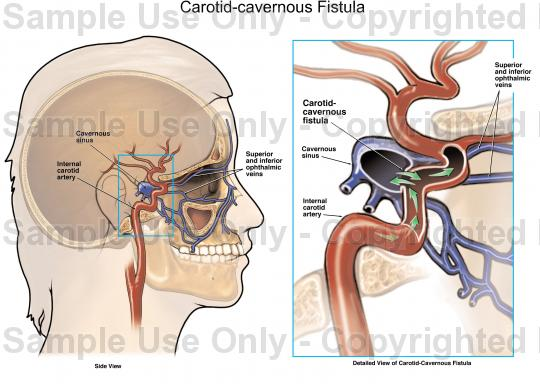
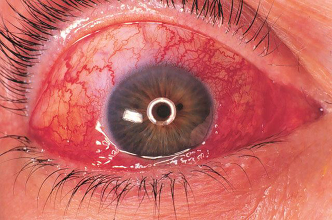
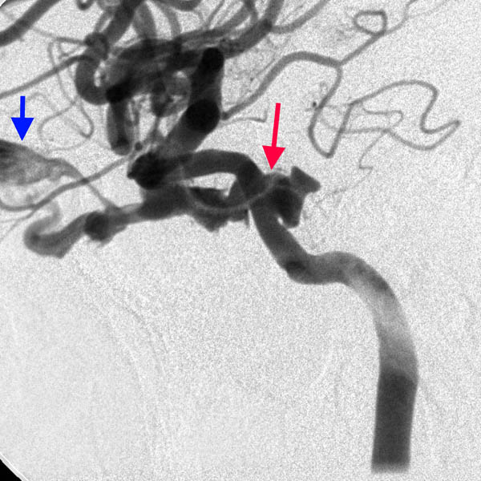
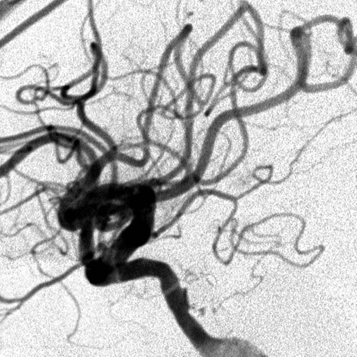
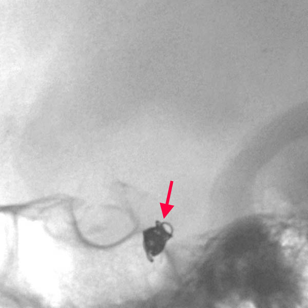
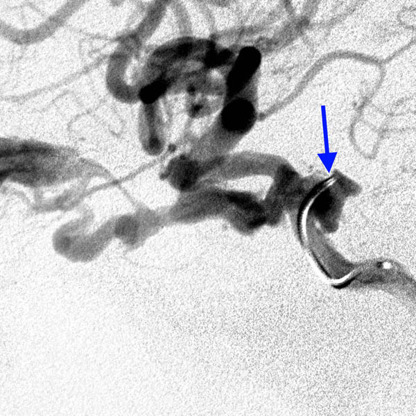

+ Rò động mạch cảnh xoang hang.

Hình: Minh họa rò cảnh hang

Hình: Mạch máu kết mạc giãn nỡ bất thường giống "mắt quỷ"

Hình: Chụp mạch cho thấy rò cảnh hang (mũi tên đỏ), làm máu động mạch dẫn lưu đến mắt (mũi tên xanh). Hình kế tiếp là chụp mạch sau khi điều trị, lỗ dò đã được đóng lại, lưu thông máu trong động mạch cảnh và xoang hang bình thường

Hình: Phương pháp điều trị sử dụng một vật liệu cuộn giống lò xo đặt và lỗ dò (mũi tên đỏ) hay sử dụng 1 catheter nhỏ (mũi tên xanh)

Hình: Ống dạng xoắn (coil) đặt vào xoang hang để bít tắt lỗ dò